HTML by Rhodium
Nitroalkenes have proven to be valuable precursors to a wide variety of target molecules. Historically, the nitroalkenes were of interest because of their biological activity; it was demonstrated that they have a detrimental effect on insects1,2 and on the growth of fungi1,3-5. Soon thereafter it was reported that they possessed antibacterial6,7, rodent-repelling8 and antitumor9 characteristics. The versatility of nitroalkenes in organic synthesis is largely due to the ease with which they are transformed into a variety of diverse functionalities. For example, they provide access to useful synthetic precursors such as nitroalkanes10, N-substituted hydroxylamines11, amines12, ketones13, oximes14, α-substituted oximes15 and α-substituted ketones16. They also react with a variety of nucleophiles, and their electron-deficient character renders them powerful dienophiles in Diels-Alder reactions17,18. β-Nitrostyrenes have found recent application in the syntheses of 3-nitrochromenes19, 3-chromanone oximes20, 3-nitrochromans, 3-hydroxyaminochromans, 3-aminochromans21 and other heterocyclic systems22.
Several reviews22-30 have focused on aliphatic nitro compounds which also encompass nitroalkenes. A few highly specialized reviews have also been written. For example, Yoshikoshi reviewed the condensation reactions of nitroalkenes with enol silanes, ester enolates, and anions derived from β-dicarbonyl compounds.31 Another review highlights the application of nitroalkenes in the synthesis of heterocyclic compounds.22 Although Barrett's recent review32a covers many of the topics discussed in the present survey, no review is devoted solely to the preparation of nitroalkenes as synthetically useful precursors and to the reduction of nitroalkenes from a synthetic standpoint. Thus the present review complements Barrett's review and will hopefully stimulate further investigation in the nitroalkene area. Although coverage focuses primarily on the literature since 1980, significant earlier contributions are included. Reactions of nitroenamines have been covered32b and only a few most recent examples are included here.
The classic route to nitroalkenes involves the base-catalyzed aldol condensation of nitroalkanes possessing, a hydrogen alpha to the carbonyl group in the aldehyde or ketone. This condensation is known as the Henry reaction33,34 and provides β-nitroalcohols which, upon dehydration, afford nitroalkenes (Eq. 1).
Equation 1.
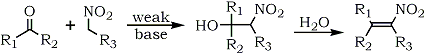A variety of basic catalysts have been utilized which influence the nature of the products obtained; these include alkali metal hydroxides, carbonates, bicarbonates and alkoxides.35 Alcoholic potassium hydroxide36, aqueous sodium hydroxide37, calcium hydroxide38,39, aluminum ethoxide40, magnesium aluminum ethoxide40 and anion-exchange resins41,42 have also shown promise as catalysts in the Henry reaction. Among the organic bases, primary amines43-46 and ammonium acetate47 have proven to be useful.
In their search for new bacterial agents, Schales and Graefe investigated the condensation reactions of nitromethane or nitroethane with aromatic and heterocyclic aldehydes under a variety of conditions using basic catalysts such as methylamine and aniline6. It appears that some modification of conditions is required for different aldehydes6. Several instances have been reported in which the type and quantity of the base influenced the nature of the products obtained. Two recent investigations dealing with these classical condensation reactions deserve mention.
The first involves a new and unusual formation of 5-methyl-3-aryl-1,2,4-oxadiazoles (4), from the reaction of aromatic aldehydes with nitroethane in the presence of ammonium acetate, reported recently by Young and Beidler48.
The condensation of 2,5-dimethoxybenzaldehyde (1) with nitroethane and ammonium acetate in glacial acetic acid has been found to give three different products, depending on reactant ratio and reaction time. Using a ratio of 1:1.5:0.8 between the aldehyde, nitroethane, and ammonium acetate, a normal Knoevenagel condensation was observed yielding 70% of the expected 2,5-dimethoxyphenyl- 2-nitropropene (2). At a reactant ratio of 1:3:2 (same reactant sequence), the major product was 2,5-dimethoxybenzonitrile (3) (62%), and at a reactant ratio of 1:40:8, with extended reflux time, the major product was 3-(2,5-dimethoxyphenyl)- 5-methyl-1,2,4-oxadiazole (4) (26%). The mechanism is believed to be dependent on a preliminary reaction wherein the nitroalkane, in the presence of ammonium acetate and acetic acid is converted into the corresponding alkanoic acid and hydroxylamine. Hydroxylamine then converts the aromatic aldehyde, via the intermediary nitrile, to the oxadiazoles following reactions of established precedent (Scheme 1). The second reaction is one reported by Wadia and co-workers.49
They note that the mere change of catalyst from ammonium acetate to sodium acetate, results in the formation of nitriles (5) instead of the expected β-methyl-β-nitrostyrenes (6) (Eq. 2).
[However, this unusual change of reaction pathway was not observed when nitromethane was used; the products were only 1-aryl-2-nitroethylenes even when sodium acetate was employed]. The generation of ethanehydroxamic acid from nitroethane could convert the aldehyde into an oxime derivative, which in turn could be cleaved to give the nitrile in the presence of sodium acetate. There are reports in the literature in which nitromethane/polyphosphoric acid50, nitromethane/pyridine hydrochloride,51 and nitropropane/ammonium monohydrogen phosphate52 have been used to convert aldehyde to nitriles.
The search for novel dehydrating agents for use with nitroalcohols continues as nitroalkenes gain in importance. Numerous reagents have been introduced recently; these include methanesulfonyl chloride53, phthalic anhydride51,55, dicyclohexylcarbodiimide (DCC)56, pivaloyl chloride57,58 and a variety of solid support reagents on alumina59-62.
| CH3CH=C(NO2)CH3 | 67% |
| CH3CH2CH=C(NO2)CH3 | 80% |
| CH3CH2CH=C(NO2)C2H5 | 70% |
| CH3(CH2)2CH=C(NO2)C2H5 | 78% |
McMurry reported that mesyl chloride in DCM53 at 0°C, is a good dehydrating agent for nitroalcohols. It transforms the hydroxyl group into a more effective leaving group. Generally, good results are obtained (see examples below) using their approach with the exception of 1-nitro-1-propene, an unhindered nitroalkene, sensitive toward polymerization.
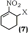 |
X |
Yield |
a |
OH | 70% |
b |
O-t-BOC | 95% |
c |
Cl | 82% |
Knochel and Seebach56 used DCC in the presence of copper(I)chloride catalyst, in ethereal solvents, for the dehydration of nitroalcohols as demonstrated in the synthesis of the following representative nitroalkenes.
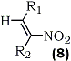 |
R1 |
R2 |
Yield |
a |
H |
n-C6H13 |
60% |
b |
n-C4H9 |
H |
90% |
c |
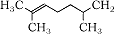 |
H |
75% |
d |
n-C4H9 |
CH3 |
99% |
e |
2-Furyl |
H |
66% |
Equation 3.
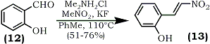2-(2-Nitroethenyl)phenols (13) were obtained under mild conditions by the reaction of (o-hydroxybenzaldehydes (12) with nitromethane in the presence of dimethylammonium chloride and catalytic amount of potassium fluoride in refluxing toluene64 (Eq. 3).
Equation 4.
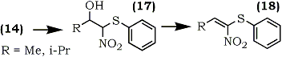1-Nitro-1-phenylthioalkenes (18) were also recently prepared by condensation of phenylthionitromethane (14) with aldehydes using potassium t-butoxide as a catalyst67 (Eq. 4). The resulting isomeric mixture of nitroalcohols (17) was dehydrated by methanesulfonyl chloride and trimethylamine using Yoshikoshi's procedure.65 Barrett and co-workers have demonstrated the application of (18) in the synthesis of S-phenyl thioesters67 and bicyclic lactams.68
Equation 5.
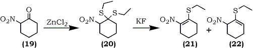A general synthesis of 1-ethylthio-2-nitroalkenes has been described recently by Fuji and co-workers which is applicable to both cyclic and acyclic systems.69 For example, 2-nitrocyclohexanone (19) was converted into the S,S-acetal (20) by a reaction with ethanethiol catalyzed by zinc chloride or boron trifluoride etherate. Subsequent elimination of ethanethiol using potassium fluoride in refluxing 2-propanol afforded a mixture of isomeric compounds, 1-ethylthio-2-nitrocyclohexene (21) and 1-ethylthio-6-nitrocyclohexene (22) (Eq. 5). The isolated undesired product (22) (81%) can, in part, be isomerized to the desired olefin (21) by treatment with potassium fluoride in 2-propanol.
Equation 6.
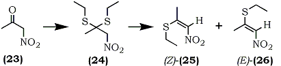An analogous reaction sequence with nitroacetone (23) afforded the S,S-diethylacetal (24) which, gave two stereoisomeric 2-ethylthio-1-nitro-propenes, [(Z)-25] (56%) and [(E)-26] (39%) (Eq. 6).
Scheme 2.
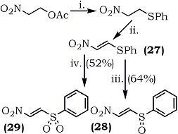
(i) PhSH, Et3N (1 eqv.), 0°C, 2 h;
(ii) SO2Cl2, CH2Cl2, 0°C, 3h;
(iii) m-CPBA (1 eqv) CH2Cl2, 0°C, 3h;
(iv) m-CPBA (2 eqv), CH2Cl2, 20°C, 38 h.
Although successful with α-nitroketones, the method may not be applicable to α-nitroaldehydes because of their instability. Also, it is not possible to prepare 2-(alkylthio)-nitroethylene by this method. A recent report70 describes the first synthesis of 1-nitro-2-(phenylthio)ethylene (27) and the oxidation products, 1-nitro-2-(phenylsulfinyl)ethylene (28) and 1-nitro-2-(phenylsulfonyl)ethylene (29) as shown in Scheme 2.
These new electron deficient olefins are good dienophiles in Diels-Alder reactions. For example, (27), (28) and (29) rapidly react with cyclopentadiene to give adducts in 75%, 97% and 82% yield respectively. Nitroalkene (29) is especially reactive due to activation by both the nitro and the sulfonyl groups. These olefins are also good Michael acceptors and they react with various nucleophiles. For example the reaction of (27), (28), and (29) with pyrrolidine gave the nitroenamine (30) in 81%, 89% and 71% yield respectively (Eq. 7).
Equation 7. |
n |
Yield |
Equation 7. 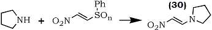 |
(27) |
0 |
81% |
|
(28) |
1 |
89% |
|
(29) |
2 |
71% |
The synthesis of 3-nitrocycloalkenones (33) and their utilization as Diels-Alder dienophiles have been reported by Corey and Estreicher.71 Peroxytrifluoroacetic acid oxidation of the oximes (31) in acetonitrile afforded nitroalcohols (32) which were oxidized in situ using pyridinium chlorochromate as shown in Scheme 3.
Scheme 3
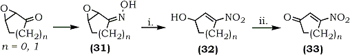(i) Trifluoroperoxyacetic acid/CH3NO2; NaHCO3/Urea
(ii) Pyridinium chlorochromate/CH2Cl2
Recently another approach appeared which obviates the need for the potentially hazardous 90% hydrogen peroxide normally used to prepare the trifluoroperoxyacetic acid used for converting (31) to (32). Vankar and Bawa72 have utilized an olefinic acetal (34) which, upon treatment with mercuric chloride and sodium nitrite, underwent a regiospecific nitromercuration (discussed later) to give nitromercurial (35). The base catalyzed elimination then yielded the nitroalkene-acetal (36) which, upon hydrolysis with 5% sulfuric acid, afforded 3-nitrocycloalkenone (37) as shown in Scheme 4. However, 3-nitrocyclopentenone is reportedly not obtainable via this route.
Scheme 4.
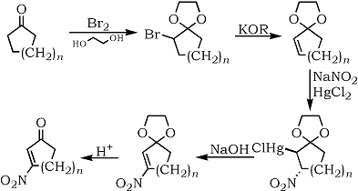A synthesis of cyclic nitroalkenes which is complimentary to those in the literature has been reported by Dampawan and Zajac73 starting from β-nitroketones. The reaction sequence is part of the overall process designed by Hassner and co-workers for the transposition of a carbonyl group to an adjacent position74 where isolation of the β-nitroalcohol or nitroalkene was precluded because of excess BH4-. In this approach β-nitroalcohols were not obtained by the classical Henry reaction which is not amenable to cyclic systems. 2-Nitrocyclohexanones, obtainable by nitration of enol acetates were reduced by sodium borohydride in ethanol. The subsequent elimination of water from the nitrocyclohexanols was affected by sodium hydride followed by acidification (pH 1-2) to afford nitroalkenes (72%) regioselectively as shown in Scheme 5.
Corey and Estreicher75 reported an elegant synthesis or nitrocycloalkene from cyclic ketones which makes available unsaturated nitro compounds not previously accessible. Allyl nitro compounds can also be obtained using this methodology. The process is outlined in Scheme 6.
Scheme 5.
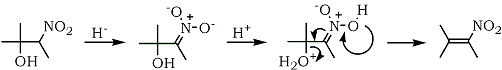Scheme 6.
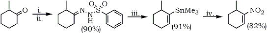(i) 2,4,6-Triisopropylbenzene sulfonyl hydrazine, (ii) sec-BuLi, TMEDA-cyclohexane,
-80 to -10°C, (iii) Trimethyltin chloride/hexane, (iv) Tetranitromethane/DMSO, 25 °C.
The general problems of low yields and complex mixtures in nitroalkene preparations via the condensation of nitromethane with aliphatic and alicyclic ketones24,29, was overcome by Barton and co-workers in an unprecedented reaction76,77. Bifunctional ethylenediamine was used in catalytic amounts, which probably helps to bring the reacting centers into close proximity then by overcoming steric barriers. The base also facilitates proton transfer as outlined in Scheme 7 thus assisting the addition of nitromethane anion and subsequently triggering the β-elimination of ethylenediamine. This explanation was supported by the absence of catalysis by simple primary amines.
Equation 8.
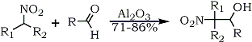R1 = R2 = Alkyl, R = Alkyl / R1 = Alkyl; R2 = H
Equation 9.
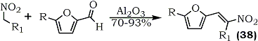
R = R1 = Alkyl / R1 = Alkyl; R = H
Polymer supported reagents have also been used in the nitroaldol addition reactions. For example chromatographic alumina (Brockmann activity I) catalyzes the preparation of polyfunctional and labile 2-nitroalkanols in a mild and convenient heterogeneous reaction from nitroalkanes and aliphatic aldehydes in the absence of solvent59 (Eq. 8).
Under similar conditions, 1-(2-furyl)-2-nitroalk-1-enes (38) are obtained directly60 (Eq. 9).
Equation 10.
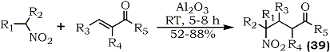R1 = R2 = Alkyl, R3 = R4 = R5 = H
Recently, it has been disclosed that an excess of potassium fluoride and alumina dramatically increases the otherwise slow nitroaldol condensation78. 6-Nitropiperonal reportedly reacts with nitromethane in less than five minutes to give the corresponding dinitrostyrene in 80% yield after dehydration. In a separate study involving the case of α,β-unsaturated carbonyl compounds, conjugate addition of nitroalkanes occurs on the alumina surface in the absence of a solvent resulting in the preparation of 4-nitroketones and 4-nitro-aldehydes61 (39) (Eq. 10).
Equation 11.
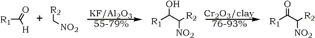R1 = alkyl, aryl ; R2 = H, Alkyl
Recently, a preparation of α-nitroalcohols on potassium fluoride doped alumina was described62; the nitroalcohols were subsequently oxidized to nitroketones using montmorillonite supported chromium trioxide (Eq. 11). The procedure can be extended to aromatic aldehydes without dehydration of the nitroalcohols into nitroalkenes.
Scheme 8.
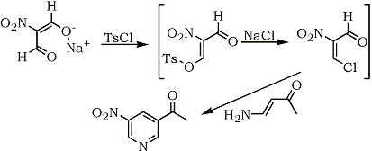In situ generated nitroalkenes have also been utilized in syntheses. On the basis of a report79 that sodium nitromalonaldehyde is readily acylated with acetic anhydride via the enolic hydroxy tautomer to give the acylal derivative of 3-acetoxy-2-nitroacrolein, 1,3,3-triacetoxy-2-nitro-1-propene, a synthesis of 3-nitropyridines was developed.80 Under anhydrous conditions, tosyl chloride reacted with sodium nitromalonaldehyde in dimethylformamide and pyridine, to produce 3-chloro-2-nitroacrolein which reacted with 4-amino-3-butene-2-one to afford 3-nitro-5-acetylpyridine (53%), Scheme 8. The formation of the initial intermediate, 3-chloro-2-nitro-acrolein, was confirmed by the characterization of a Diels-Alder adduct with cyclopentadiene.
1-Nitro-2-alkyl nitrates, readily obtainable in high yields from 1-alkenes, have been converted to nitroalkanes by sodium borohydride reduction.81 The reaction presumably proceeds via the nitroalkene intermediate resulting from a base-induced nitric acid elimination (Eq. 12).
Equation 12.
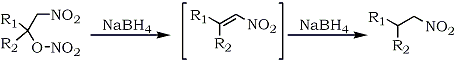In a study of limited scope, a direct nitromethylation of alkenes via a radical addition was accomplished by using Mn(III)-Cu(II) (as co-oxidants) and nitromethane.82 However, the reaction proceeded only in poor yields (35-38%) and was limited to cycloalkenes; with terminal alkenes and styrene, nitromethylation was not a favorable process.
Nitryl iodide, a pseudohalogen reagent, available via the reaction of silver nitrite with iodine was introduced in 193283. The synthetic application of the reagent under mild conditions was described by Hassner and co-workers84 for the selective synthesis of β-iodonitro-, vinylnitro- and nitroalkanes.
Equation 13.
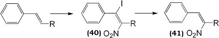Two other reports have appeared on the use of this reagent with unsaturated carbohydrate derivatives85,86. More recently, nitration of substituted styrenes by nitryl iodide was described providing regioselective addition products; iodonitro compounds (40), upon treatment with base, generated the 3-nitrostyrene87 (41) (Eq. 13).
The formation of hydroxynitro compounds (42) and nitroketones (43), occasional by-products in the reaction, could be suppressed by treatment of the crude addition product with trimethylamine immediately following the disappearance of the styrene substrate thereby increasing the yield of 6-nitrostyrene.
Selenium chemistry has been used in the synthesis of nitroalkenes. Tomoda and Nomura reported a novel method for the preparation of conjugated nitroalkenes (46) from unactivated alkenes via nitroselenylation. Initial attempts using benzeneselenyl bromide and silver nitrite resulted in a mixture of 2-nitroalkyl phenylselenide (44) and 2-hydroxyalkyl phenylselenide (45) with the latter being predominant88 (Eq. 14). The authors, however, soon discovered that formation of (45) could be completely suppressed using mercury(II)chloride, although its mechanistic role is not clear.89 The nitroselenylation (anti) and the subsequent elimination of selenoxide (syn) were stereospecific. (E)- and (Z)-4-octenes each afforded a single stereoisomer as confirmed by the 13C NMR spectra of (44, R1 = H, R2 = R3 = C3H7) and (44, R1=R2=C3H7, R3=H) and the 1H NMR of the nitroalkenes (46, R1=H, R2=R3=C3H7) and (46, R1 = R2 = C3H7, R3 = H).
(47) R = NO2, R1 = SePh
(48) R = SePh, R1 = NO2
Unsymmetric alkenes, for example 1-hexene, gave a regioisomeric mixture of Markovnikov (47) and anti-Markovnikov (48) isomers in the ratio of 78:22, although styrene provided the regiospecific product (49) with the phenylseleno group occupying the terminal carbon atom.
Scheme 9.
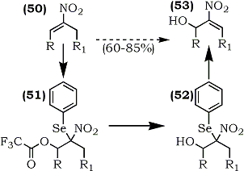Seebach and co-workers have achieved the oxo-selenation of nitroalkenes (50) using phenylselenyl chloride/silver trifluoroacetate (phenylselenyl trifluoroacetate).90 Methanolysis of (51) provided (52) and subsequent regioselective elimination of phenylselenyl group with hydrogen peroxide gave the allylic alcohol (53) (Scheme 9).
This key step permitted an overall regioselective allylic pivaloyloxylation of nitroalkenes thereby making either isomer accessible. Derivatives with conjugated (9, 54, 55) and non-conjugated (7) substituents were shown to be useful as multiple coupling reagents for highly convergent syntheses.58
R = OH, OCO-t-Bu, Cl
Scheme 10
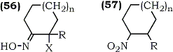a R = H, X = Cl, n = 1 (42%)
b R = H, X = Br, n = 1 (45%)
c R = Me, X = Cl, n = 1 (40%)
d R = H, X = Cl, n = 0 (38%)
In an exact reversal of a well-known reaction,91 Sakakibara and co-workers have reported the trifluoroperacetic acid oxidation of α-halo-ketoximes (56) to nitroalkenes92 (57). Since α-haloketoximes are readily available from alkenes via reaction with nitrosyl chloride in the presence of hydrochloric acid93 or from α-haloketones via standard oximation using hydroxylamine salts,92 the reaction has a broad scope for the regioselective introduction of a nitro group. Several cyclic and acyclic nitroalkenes were obtained in moderate yield (31-66%) using this approach (Scheme 10) which bears close resemblance to one described earlier by Corey.71
a R = Ph (27%)
b R = Me (8%)
a R = Br
b R = Li
c R = Sn(CH3)3
d R = NO2
In a related procedure, Russian workers94 oxidized 1,1-disubstituted alkenes using alkyl nitrites in acetic acid to produce nitroalkenes (58a) and (58b) in poor yields (27% and 48% respectively).
Corey converted 1-lithio-2-bromocyclopentene (59b), obtained by lithiation of 1,2-dibroroocyclopentene, to 2-bromo-1-nitrocyclopentene (59d) via an earlier described nitrodestannylation methodology using tetranitromethane.75
In a preliminary report, Kunai and co-workers95 described an electrochemical method employing a well-known alkene nitrosation approach. The anodic oxidation of cyclic and acyclic alkenes at a platinum anode in a divided cell containing aqueous sodium nitrite and sodium nitrate solution provided modest yields of 1-nitrocyclohexene (41%), 1-nitrocyclooctene (57%),and 1-nitro-1-hexene (63%).
There are very few reports describing 1,2-dinitroalkenes in the literature due to their inherent thermal instability. The few examples of isolated 1,2-dinitroalkenes include 1,2-dinitrocyclohexene,96 1,2-dinitroethene,97 2,3-dinitro-2-butene,98 3,4-dinitro-3-hexene98 and dinitrostilbene.99,100
Scheme 11.
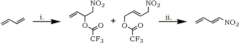(i) NH4NO3, TFAA, CH2Cl2, reflux (ii) anhydrous KOAc, Et2O
| 60a | R1, R2, R3, R4 = H | 89% | 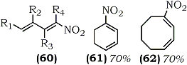 |
| 60b | R1, R4 = H; R2, R3 = CH3 | 75% | |
| 60c | R1, R4 = CH3; R2, R3 = H | 84% |
Similarly, the preparation and utility of 1-nitro-1,3-dienes has not been developed; the only exception being a few Russian reports involving addition of N2O5101, NO2/I2102 or NO2/O2102 to 1,3-dienes followed by elimination, and a patent describing the preparation of 2-methyl-1-nitro- 1,3-butadiene.103 Recently, Bloom and Mellor developed the synthesis of 1-nitro-1,3-dienes via nitrotrifluoroacetoxylation of 1,3-dienes.104 Nitrotrifluoroacetate adducts, obtained by reaction of 1,3-dienes with in situ generated trifluoroacetyl nitrate (from ammonium nitrate and trifluoroacetic anhydride),105 readily eliminate trifluoroacetic acid to give 1-nitro-1-3-dienes in high yield (Scheme 11).
Equation 15.
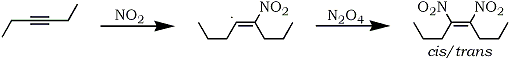Mixtures of cis- and trans-dinitroalkenes have been obtained by the addition of dinitrogen tetroxide to dialkylacetylene100 (Eq. 15). The reaction presumably proceeds via free radical intermediates and fails in the case of terminal acetylenes.
Equation 16.
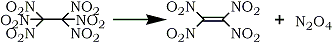An earlier preparation of tetranitroethylene106 was improved when Baum, Baum and Tzeng107 synthesized it in 50% yield via the flash vacuum pyrolysis of hexanitroethane (Eq. 16).
The optimum conditions for the synthesis involve passing hexanitroethane vapor, at 1 mm Hg, through a pyrolysis tube heated to 240-270°C and condensing the product, a greenish yellow solid, in a cold trap. Tetranitroethylene reacts with acetylenes and alkenes to give 3-nitroisoxazoles and 3-nitro-2-isoxazolines, respectively, and other reactions typical of a powerful dienophile and electron acceptor. The known oxidative conversion108,109 of carbonyl groups into nitro functionalities via oximes using trifluoroperoxyacetic acid has been extended to α,β-unsaturated compounds by Takamoto and co-workers110 (Scheme 12).
Treatment of α-unsubstituted α,β-epoxyketoximes with trifluoroperoxyacetic acid afforded the corresponding γ-hydroxy-α-nitroalkenes in high yield. For example, (63) gave (64). Corey and Estreicher employed similar methodology for the synthesis of 3-nitrocycloalkenones71 (vide supra).
|
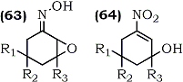 |
Yield | ||
| a | R1 = R2 = R3 = CH3 | 86% | |
| b | R1 = R2 = CH3 ; R3 = H | 77% | |
| c | R1 = R2 = R3 = H | 75% | |
Scheme 13.
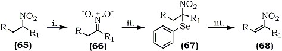a R = Hexyl, R1 = H (80%) b R = Septyl, R1 = H (83%)
(i) n-BuLi (2 eq), THF (ii) PhSeBr, THF, 0�C (iii) 35% H2O2
An oxidative transformation of nitroalkanes to nitroalkenes has been reported by Sakakibara and co-workers who used selenium chemistry.111 Phenylselenenyl bromide reacted with the nitronates (66) derived from nitroalkanes (65) to give nitro(phenylseleno)alkanes (67) which upon an oxidative regioselective elimination, using hydrogen peroxide, afforded 1-nitroalkenes (68) in high yield (67-83%) (Scheme 13).
Equation 17.
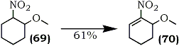The method is applicable to a variety of acylic and cyclic compounds. For example, 3-methoxy-2-nitrocyclohex-1-ene (70) was obtained from 1-methoxy-2-nitrocyclohexane (69) (Eq. 17).
The intermediate nitro(phenylseleno)alkanes (71), bearing an acidic hydrogen, were found to be valuable intermediates for hydroxymethylation112. The α-nitroselenide (71) underwent a smooth condensation with aqueous formaldehyde to give relatively stable 2-nitro-2-phenylselenoalkanols (72). Subsequent selenoxide elimination provided a facile entry to useful hydroxynitroalkenes (73) (Scheme 14).
Scheme 14.
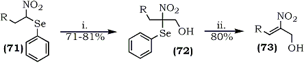(i) HCHO, H2O, Ca(OH)2, RT (ii) 35% H2O2, THF
1-Nitro-1-phenylseleno-1-alkenes, a novel group of 1-nitroalkenes bearing a selenyl group at the 1-position have been prepared.113 The α-nitroselenide (74) , on Henry condensation with aldehydes (alkyl and aryl), afforded isomeric mixtures of nitroalcohols (75) which upon acetylation and elimination of acetic acid provided (Z)-1-nitro-1-phenylseleno-alkenes (76) (Scheme 15).
R |
Yield |
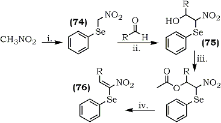 | |
| a | n-C9H19 |
82% |
|
| b | n-C4H9-CH-C2H5 |
88% |
|
| c | C2H5 |
88% |
|
| d | C6H5 |
79% |
|
| Scheme 15 | (i) NaOC2H5 CHCl3; PhSeBr (ii) KF; RT.
(iii) Ac2O/BF3·Et2O; RT. (iv) Na2CO3/benzene, reflux. |
||
β-Nitroenamines occupy a central position32 among 1-nitro-1-alkenes with hetero atoms at the 1-66 or 2- position.114,115 Rover and co-workers have described a methodology to synthesize nitroenamines (77) via the condensation of triethyl orthoformate, with nitromethane and amines.116 (Scheme 16).
R1 |
R2 |
Yield |
Scheme 16 |
|
a |
-CH3 |
-CH3 |
35% |
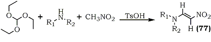 |
b |
-(CH2)4- |
20% |
||
c |
-(CH2)2-O-(CH2)2- |
70% |
||
d |
-C6H5 |
CH3 |
67% |
|
Equation 18.
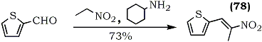In an approach directed towards the synthesis of the pharmacologically active β-(2-thienyl)ethylamine, the preparation of the precursor, 1-(2-thienyl)-2-nitropropene (78), was improved using 2-thienaldehyde, nitroethane and n-amylamine as the catalyst46 (Eq. 18).The reaction time, at room temperature, is about two weeks.
1-Phenylsulfonylpyrrole-3-carboxaldehyde or 1-phenylsulfonyl pyrrole-2-carboxaldehyde were condensed with nitroalkanes in the presence of ammonium acetate or glacial acetic acid to afford nitroalkenes117 (79).
| 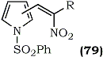 | R | Position | Yield | 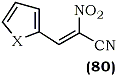 | X |
Yield |
|||
| a | H | 3 | 73 | a |
O |
77% |
|||
| b | CH3 | 3 | 65 | b |
S |
60% |
|||
| c | H | 2 | 60 | c |
NH |
75% |
|||
| d | CH3 | 2 | 79 | d |
NCH3 |
74% |
In a continuation of their investigations into the chemistry of cyano-nitroalkenes118, a Russian group has attained the alkenylation of nitro-acetonitrile with a variety of heterocyclic carboxaldehydes in a mixture of absolute ethanol and ether at 20-25°C without the participation of an acidic or basic catalytic agent119. A series of heterylcyanonitroalkenes, i.e. 3-(2-furyl)-, 3-(2-thienyl)-, 3-(2-pyrrolyl)-, (80a-d) etc. were obtained in good yields using this methodology.
Equation 19.
Recently Jung and Grove120 disclosed the preparation and utility of β-phenylsulfinyl- nitroalkenes (81) as nitroacetylene equivalents in Diels-Alder reactions with dienes (Eq. 19). The nitroalkenes were obtained in four steps from acylimidazoles.
The reduction of α,β-unsaturated nitroalkenes provides easy access to a vast array of functionalities including nitroalkanes10, N-substituted hydroxylamines11, amines12, oximes14, ketones13, α-substituted oximes15 and ketones.16
The reduction of nitroalkenes to nitroalkanes has been achieved in a variety of ways. Initial attempts, utilizing the inverse addition of lithium aluminum hydride to nitroalkenes121, resulted in poor yields of the corresponding saturated analogs. In view of the relative inertness of the borohydrides towards nitro groups, a detailed investigation was carried out using sodium trimethoxyborohydride, lithium borohydride and sodium borohydride122. In most cases, dimeric products were also formed which arose via the Michael addition of the nitronate intermediate to the parent nitroalkene. The main theme of the several reports was the selective reduction of the double bond while avoiding the formation of Michael by-products. Careful control of the pH of the reduction medium123 and the use of sodium cyanoborohydride124 as the reducing agent yielded modest improvements.
Varma and Kabalka10a have reported the use of trialkylborohydride reagents (such as triethylborohydride and tri-sec-butylborohydride) to generate nitronate intermediates via a 1,4-addition of hydride; the corresponding nitroalkanes were most easily obtained by using silica gel to protonate the nitronate salts. Another silica gel assisted sodium borohydride reduction, in a mixed chloroform-propanol solvent system, was reported in which 2-aryl-1-nitroalkanes were generated from nitrostyrenes in high yields.125
Varma and Kabalka10b introduced a manipulatively simple approach which utilizes sodium borohydride in a mixed solvent system of methanol and tetrahydrofuran. Gradual addition of sodium borohydride at room temperature to the nitroalkene solution in this mixed solvent system provided clean reaction products (62-82%); the methodology has been extended to the selective reduction of 3-nitrochromenes to 3-nitrochromans (51-85%).126 The formation of methoxyborohydride species is implicated in the reaction10b. In a related approach, reverse addition of β-nitrostyrenes to sodium borohydride in dioxane/ethanol provided the corresponding phenylnitroethanes in good yields.127
Equation 20.
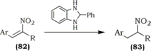The selective reducing properties of 2-phenylbenzimidazoline (PBI), prepared in situ from o-phenylenediamine and benzaldehyde, was used for reduction of arylnitroalkenes (82) to the corresponding nitroalkanes (70-91%) (83) without side reactions.128 The reaction, however, is not applicable to aliphatic nitroalkenes (Eq. 20).
Ohno and co-workers129 discovered that the Hantzsch ester (84), an NAD(P)H model, reduces various nitroalkenes in good yield in the presence of silica gel. Both, aliphatic and aromatic nitroalkenes were smoothly reduced, without dimerization, via this chemoselective method which tolerates functionalities such as aldehydes and ketones.
Among various reducing agents employed for the preparation of nitroalkanes, sodium borohydride appears to be the most extensively used. The relatively low cost and the manipulative ease with which it can be handled (one of the least moisture sensitive hydrides) makes it ideally suited for selective reductions. For example, the reduction of (85) to the corresponding nitro sugar (90%), an intermediate in the synthesis of 4-deoxydaunosamine and 4-deoxyristosamine130, and nearly the quantitative conversion of the steroidal nitroalkene (86) to its corresponding saturated derivative77 were achieved using sodium borohydride.
Equation 21.
The catalytic hydrogenation of nitrostyrenes to oximes had been reviewed earlier131,132. Substituted nitrostyrenes, upon hydrogenation with palladium on carbon in pyridine, provide the corresponding oximes133. The catalytic hydrogenation of straight-chain and cyclic nitroalkenes with palladium on carbon in a variety of solvents afforded mixtures of oximes and the corresponding saturated nitroalkanes.134
Tin(II)chloride has been used under conventional acidic conditions to produce a mixture of α-substituted oximes and the corresponding saturated nitro compounds135,136. Varma and Kabalka carried out an extensive investigation using tin(II)chloride under a variety of conditions. The tin(II)chloride reduction of conjugated nitroalkenes in alcoholic (and thiol) media afforded α-alkoxy (α-alkylthio) oximes in high yields15 (Eq. 21). Unsubstituted oximes were obtained by using tin(II)chloride in acetone14c.
Equation 22.
Tin(II)chloride under basic conditions (sodium stannite) afforded unsubstituted ketoximes in high yield14a. However, aldoximes were not obtainable under these reaction conditions. A general synthesis of oximes was recently reported which provides moderate yields of both aldoximes and ketoximes, the reaction involves a palladium assisted transfer reduction using sodium hypophosphite14d.
It has been reported that a few steroidal nitroalkenes137 produce α-hydroxy oximes upon reduction with chromium(II)chloride77,138,139 (Eq. 22).
| Scheme 17 | Yield |
||
a |
R = R1 = R2 = H | 15% |
|
b |
R = CH3; R1 = R2 = H | 70% |
|
c |
R = CH3; R1 = Br; R2 = H | 68% |
|
d |
R = CH3; R1 = R2 = OC2H5 | 62% |
|
A recent report140 outlined an unusual reduction of 3-nitroflavenes by chromium(II)chloride to flavonols which presumably occurs via an α-hydroxy oxime intermediate. A detailed investigation revealed that chromium(II)chloride rapidly reduces β-nitrostyrenes to oximes (Scheme 17) rather than to α-hydroxy oximes when the reactions were run under milder conditions14b (room temp, 10 min).
Equation 23.
Electrochemical methods have also been used to convert nitroalkenes to oximes and/or ketones and aldehydes. Shono and co-workers141 reduced a variety of functionally substituted nitroalkenes to the corresponding oximes using a platinum cathode in methanolic sulfuric acid. However, the process leads to modest yields and to the formation of acetals and ketones as byproducts. Another electrochemical approach afforded either ketoximes or ketones (depending upon the workup conditions) from nitroalkenes by utilizing aqueous perchloric acid in a dichloromethane and dioxane solvent system and a lead electrode142 (Eq. 23).
Zinc and methanolic ammonia has also been used to obtain ketoximes from steroidal nitroalkenes in high yield143.
The reverse addition of lithium aluminum hydride to 1-phenyl-1-nitropropene was studied in detail121. A variety of products was isolated by varying the reaction temperature and the reactant ratios. By using acidic hydrolysis of the intermediate organometallic complex, phenylacetone was obtained via a modified Nef reaction.
α-Alkoxy or α-alkylthio oximes obtained by tin(II)chloride reduction of nitroalkenes (vide supra, Eq. 21) have been conveniently hydrolyzed by levulinic acid144 to produce α-substituted ketones16.
In contrast to the formation of the usual α-hydroxy oximes from cyclic nitroalkenes (steroidal137-139 and chromene derivatives140), the chromium(II)chloride reduction of nitroalkenes produced the corresponding unsubstituted carbonyl compounds136.
Monti and co-workers145 have also converted nitroalkenes directly into the corresponding saturated ketones or aldehydes. They found that Raney nickel and sodium hypophosphite, at pH 5 in ethanol, provided a high yielding chemoselective route to a variety of aldehydes and ketones from nitroalkenes. Using this methodology, oximes can be reduced to carbonyl compounds and nitroalkanes to amines in the presence of alkene, ester, and ketone functionalities.
Equation 24.
The reaction of lithium tri-sec-butylborohydride with a nitroalkene produces a nitronate intermediate (87) which upon hydrolysis with 4N sulfuric acid affords yet another route to ketones from nitroalkenes (Eq. 24).
Interestingly, the reduction of β-nitrostyrene derivatives under similar reaction conditions produces white precipitates146 which yield the saturated nitroalkanes upon acid hydrolysis; only traces of aldehydes were obtained.
Equation 25.
N-Substituted hydroxylamines are obtainable by the reduction of oximes147a-c and nitro salts148 or by the oxidation of amines149a-b. The methods are involved and are not readily amenable to the synthesis of many desired target molecules. A more appropriate route would be the reduction of conjugated nitroalkenes121,150. It is known that sodium borohydride reduces α,β-unsaturated nitroalkenes to the corresponding nitroalkanes (Section III-A). Also, Feuer reported148 that nitro salts (nitronates) are easily reduced to hydroxylamines by borane complexes (Eq. 25).
These reactions presumably occur through a common intermediate (88), which can then be hydrolyzed directly to nitroalkanes or reduced with a borane complex to yield hydroxylamines after hydrolysis. Indeed, it was found that sodium borohydride catalyzes the reaction of borane complexes with conjugated nitroalkenes11a (Eq. 26).
Equation 26.
This straightforward approach afforded pure hydroxylamines in high yields. Subsequent modification by in situ generated borane in tetrahydrofuran (from NaBH4 and BF3·Et2O), obviated the need for BH3·THF11b which is not universally available.
Alkylamines are generally accessible via the reduction of nitroalkenes by lithium aluminum hydride121,151-153. Substituted thienylethylamines46 were obtained using this methodology. Catalytic hydrogenation150 has also been used on occasion with limited success.
Equation 27.
Earlier studies154 demonstrated that hydroxylamines, as well as their precursor oxime derivatives, are reduced by diborane to amines at elevated temperature (105-110°C). Varma and Kabalka12a utilized their earlier reported reaction113 to reduce hydroxylamines (89) to amines. It was found that excess borane reduced the nitroalkenes to amines in the presence of a catalytic amount of sodium borohydride (Eq. 27). The reaction, which generally takes 6 days at room temperature, can be accelerated by running it in refluxing tetrahydrofuran.155 This reduction can also be achieved utilizing in situ generated BH3·THF12 (from sodium borohydride and boron trifluoride etherate). The reaction yields are comparable to those obtained using BH3·THF and the reaction can be carried out in one pot in five hours.
| R | Position |
Yield |
||
| a | H | 3 |
69% |
|
| b | CH3 | 3 |
68% |
|
| c | H | 2 |
70% |
|
| d | CH3 | 2 |
72% |
A general synthesis of β-(2- or 3-pyrryl)alkylamines (90) containing an unsubstituted pyrrole N atom was developed from 1-phenylsulfonylpyrrole-2- or -3-carbaldehyde via the reduction of the corresponding nitroalkene117. Using lithium aluminum hydride as the reducing agent, concomitant removal of the phenyl sulfonyl protecting group takes place.
Recently, an efficient reduction of aliphatic nitro compounds to amines was described which included the reduction of 1-nitrocyclohexene156. The combination of sodium borohydride with catalytic amounts of nickel chloride was employed; nickel boride (Ni2B) generated in situ was implicated as the active catalyst.